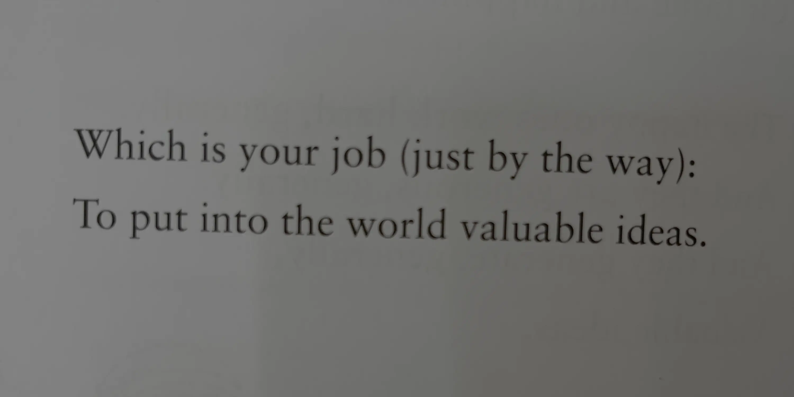

Happy Tuesday! Thank you for supporting the Daily Bulletin project.
- Book a meeting with the WellCo chairs.
- Provide feedback to WellCo through the WellCo Line.
- Sign up to take over a WellCo session.
- Suggest improvements to the Daily Bulletin project.
- Unsubscribe if you no longer wish to receive emails from the Daily Bulletin project.
Wellbeing Inspirations
Want to contribute to a future Daily Bulletin? Share your inspirations to give everyone some morning wellbeing energy!
Quote of the Day

:)
Excerpt from "You Don't Have to Have a Dream" by Tim Michin. Shared by Debby.
Delicious Dinings
| Day | Meal | Options |
|---|---|---|
| Tue | Breakfast | Continental Counter |
| Lunch | Crispy Tofu 🌱 | |
| Dinner | Chicken & Mushroom in Tomato & Basil Sauce | |
| Cauliflower Bake 🌱 | ||
| Wed | Breakfast | Hot Breakfast |
| Lunch | Turkey & Mushroom Fricassee | |
| Falafel w/ Roast Courgette & Tomato Pesto 🌱 | ||
| Dinner | Vegetarian Nasi Goreng Pea Protein 🌱 | |
| Sesame Roast Green Beans 🌱 |
Retrieved from Shared Weekly Menu. For reference only; accuracy not guaranteed.
Important Events
| Day | Time | Event | Location |
|---|---|---|---|
| Tue | 13:00–19:00 | Pen y Fan Hike | Pen y Fan |
| 19:30–20:00 | FEMO | Great Hall | |
| 020:0–20:30 | SusCo | Valley | |
| Wed | 16:30–17:30 | UWC Week Food Fair | Moondance |
| 19:30–20:00 | WellCo ☀️ | Great Hall | |
| 020:0–20:30 | P6 | Great Hall |
Retrieved from What's On This Week.
Today in History
- 1400 – Owain Glyndŵr proclaimed himself Prince of Wales, declaring that he could save the Welsh from English invasions.
- 1989 – During a tour of the United States, Soviet politician Boris Yeltsin visited a grocery store in Texas that had a major impact on his views regarding the Soviet Union's economic system.
Retrieved from Wikipedia.
Today in News
- Long-wrought WTO global agreement aimed at reducing overfishing takes effect
- Qatar hosts summit in response to Israeli strike on Hamas in Doha, seeking to restrain such attacks
- Brazil’s Lula pushes back against tariff, tells Trump the country’s democracy is not on the table
Retrieved from the Associated Press.